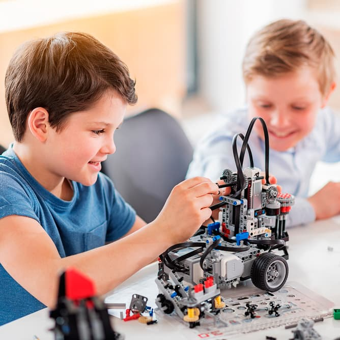

Últimas Noticias
Nueva Oferta de Actividades Extraescolares (2025): Se abren las inscripciones para talleres de robótica, música y deportes. Los alumnos interesados pueden apuntarse hasta el próximo viernes en secretaría o a través de la web del colegio.
Excursión Cultural al Museo de Ciencia: El próximo jueves, los estudiantes de 4º a 6º de primaria realizarán una visita al Museo de Ciencia. Se recuerda llevar autorización firmada, almuerzo y ropa cómoda.
Programa de Reciclaje Escolar: El colegio lanza una campaña de reciclaje para fomentar el cuidado del medio ambiente. Se colocarán nuevos contenedores para papel, plástico y pilas en las aulas y zonas comunes.